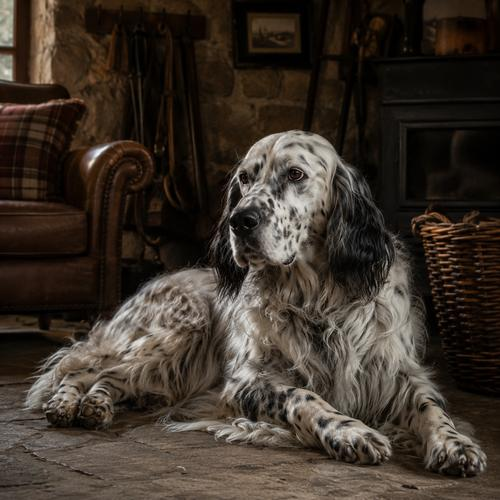
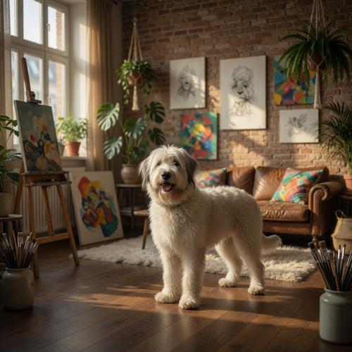
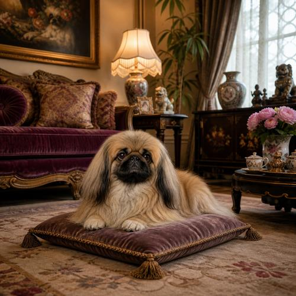
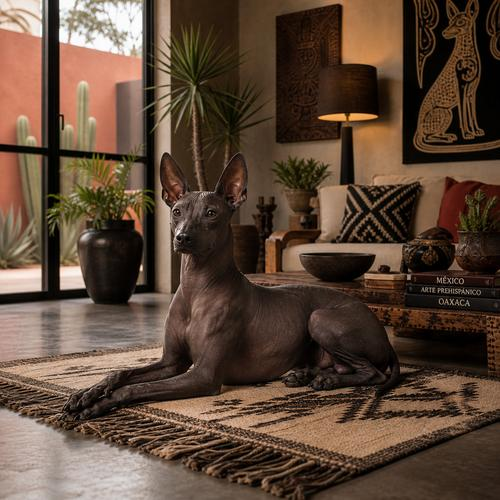
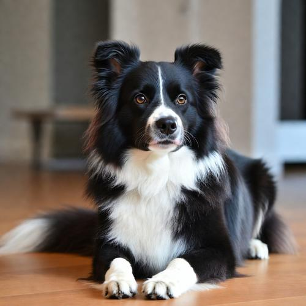
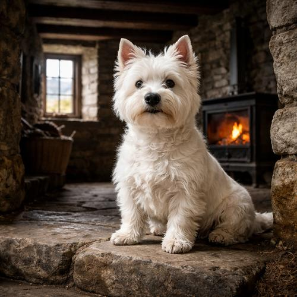
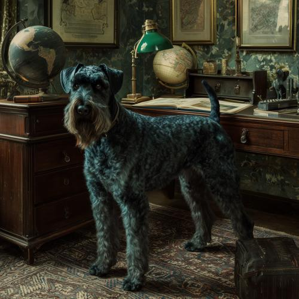
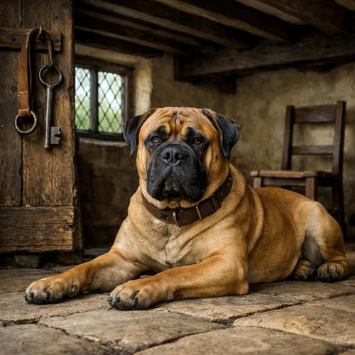
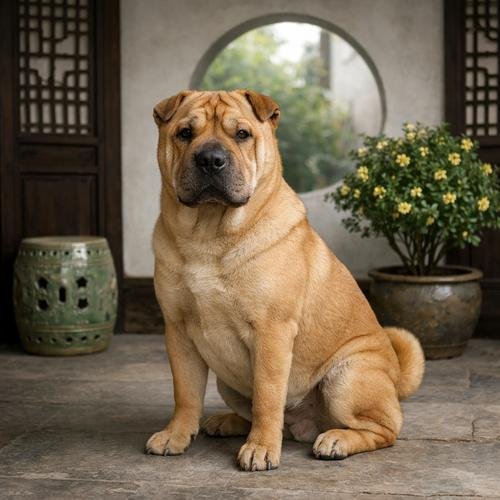
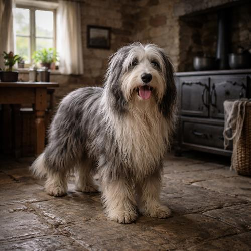

Alle 171 Portraits

Schafpudel
Folge 11 · ab 38:50

Pekingese
Folge 10 · ab 42:29

Xoloitzcuintle
Folge 8 · ab 1:02:08

Border Collie
Folge 7 · ab 44:50

West Highland White Terrier
Folge 4 · ab 56:20

Kerry Blue Terrier
Folge 3 · ab 19:43

Bullmastiff
Folge 1 · ab 16:24

Shar Pei
Folge 238 · ab 19:46

Bearded Collie
Folge 195 · ab 42:37